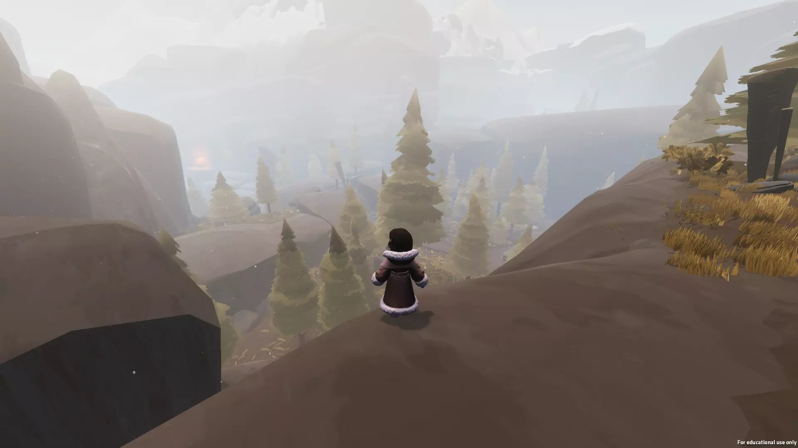
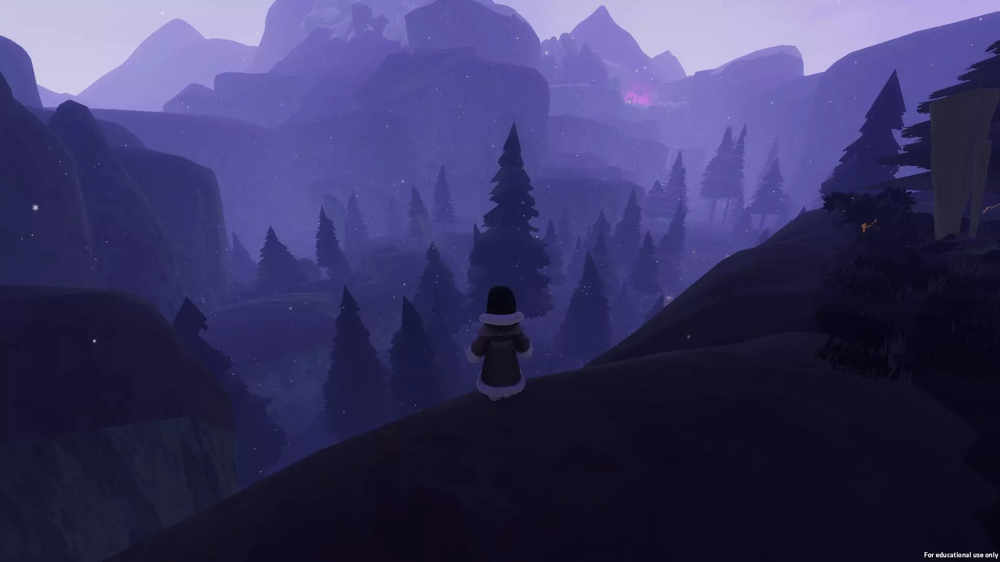
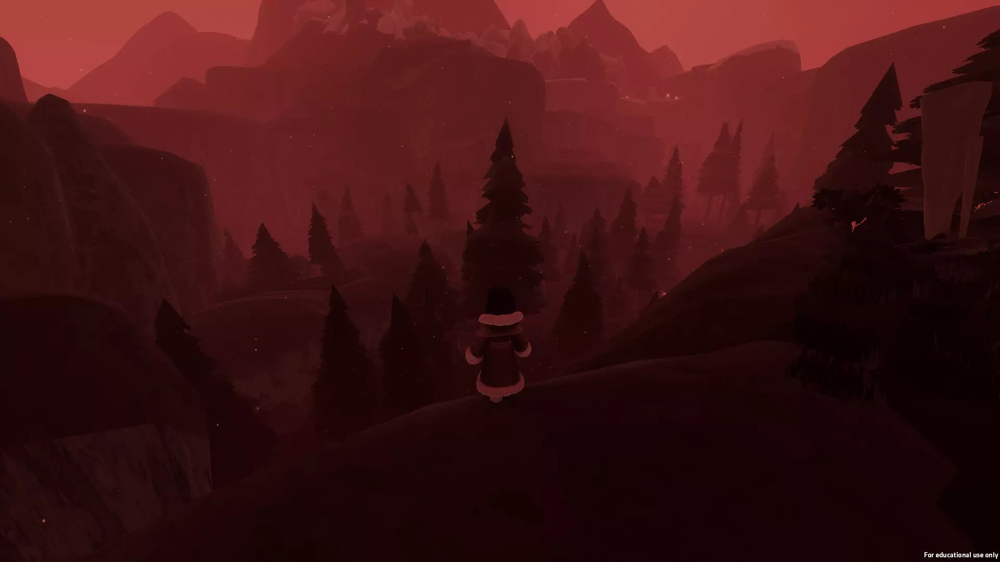

Futuregames · Game project
Alter
In this third-person platformer set in a mysterious and spiritual realm, you are on a journey of ridding a dark world from its corruption and eventual decay.
- Engine
- Unity
- Team
- 11 developers
- Length
- 7 weeks
- Year
- 2020
Mountable Companion and AI
Kill your darlings
As one of my first tasks I made a mountable companion. As the game evolved towards more of a platformer than an exploring game we decided not to use it. Also the landscape shaped up to be more mountainous than steppe like.
Overarching Technical Responsibility
Gluing it all together



The game manager kept track of the game state and adjusted things accordingly. These were things like playing the correct music, opening or blocking paths for the player and changing the visuals of the level.
Alter the environment
Make the player feel progression
As part of our game’s core narrative, the world and the environment needed to change and hint to the player what was going on. Here we are changing the post processing effects and colours to get the mood we want.
SFX & VFX systems
Make it pop
I made a system for playing different sound effects and a system for displaying visual effects. They were used for the player character's footsteps and abilities.